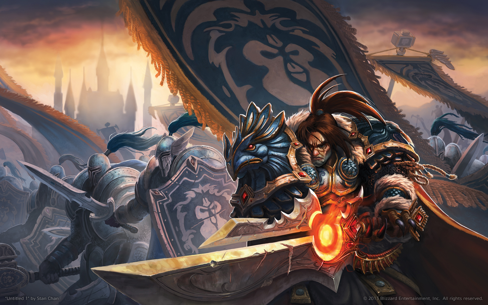

Varian Wrynn
Varian Wrynn, also called Lo'Gosh the "Ghost Wolf", the son of the late King Llane Wrynn, was the acting leader of the Alliance, and the former King of Stormwind. Under his leadership, the humans of Stormwind led the Alliance to victory against the Lich King in Northrend, and now seek to bolster their strategic holdings against their perennial enemy, "the Horde". With the world plunged into chaos by the great Cataclysm, he took up military leadership of the Alliance, and vowed to forge a new destiny for Azeroth.
King Varian was a ruler with a fierce love for his people and his son, Anduin. Though the death of his father Llane Wrynn I and his hero Sir Anduin Lothar left him severely distrusting of the Horde, he showed a willingness to attempt peace. Before he was kidnapped by the Defias, he was en route to a peace summit with Thrall, during the war against the Lich King he was willing to work with the Horde at the Wrathgate, and after the war was won, he agreed to a tenuous peace between the factions. In addition, one of his closest friends was the blood elf, Valeera Sanguinar, and he was willing to allow the orc Varok Saurfang to give his son a "hero's burial." Even so, after the massacre at the Wrathgate, his willingness to cooperate with the Horde as a whole had all but evaporated; during the events in Ulduar he was quick to wish death on them all, and later, after the night elves were attacked by orcs during the events of The Shattering, only the words of Jaina Proudmoore were enough to stave off a direct conflict with the Horde. He has proved himself countless times to be a fierce and devoted leader as well as a capable combatant. Despite his attempts to forge peace, if any would dare to harm that of his people or the Alliance, he would respond forcefully and swiftly.
When his consciousness was split by Onyxia, so too was his personality. One side retained all of Varian’s manners and etiquette; while the other, Lo'Gosh, retained his skill in battle. Though the two halves were eventually reunited, they did so imperfectly. At times, Lo’Gosh was more dominant, and he was not one to shy away from conflict if he believed it necessary.[8] Some of Varian's dialogue in World of Warcraft implies that the two halves still existed as independent entities and that the Lo'Gosh half was becoming dominant over the calmer, more rational part of Varian.
The issue of the two halves still existing has been solved in the Wolfheart novel. Varian performed the worgen ritual to control his inner wolf, that of Lo'Gosh, who actually turned out to be connected to Goldrinn.